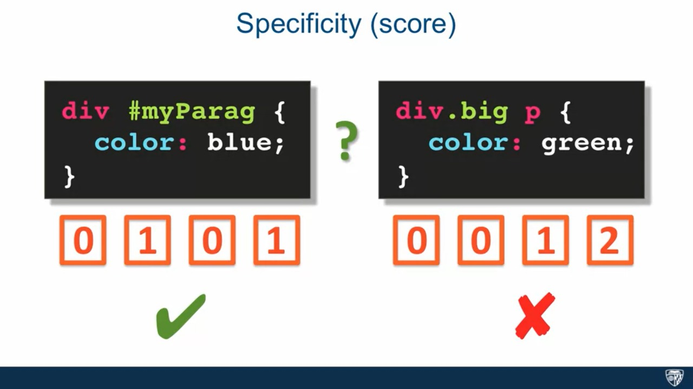
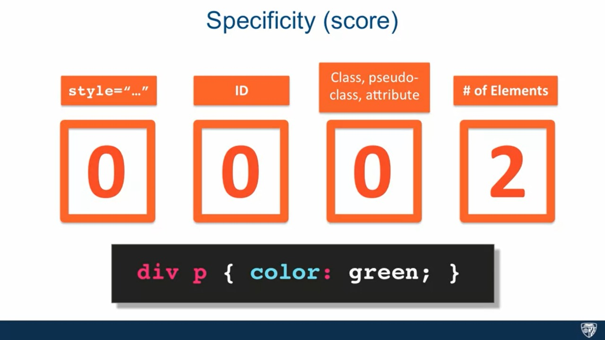
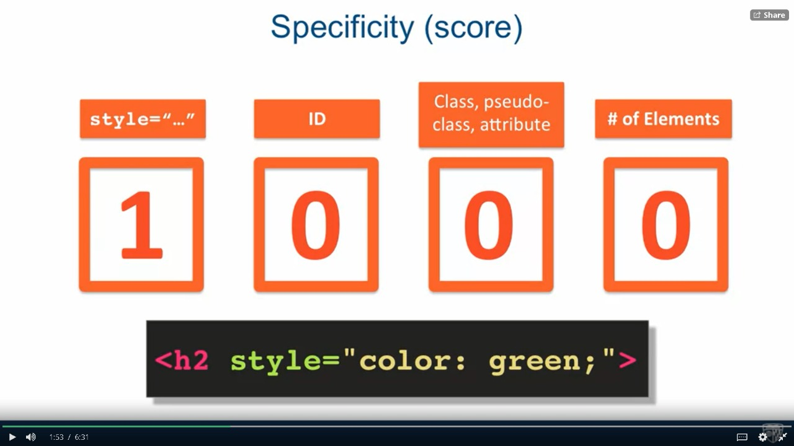

So the concept of specificity tells us that whch context is going to be given more acknowledgement, when more than one css commands are targetted on the same thing but in different ways.So to calculate the specifity, keep this picture in mind.
Also, !important will disregard specificity, so be cautious.
  